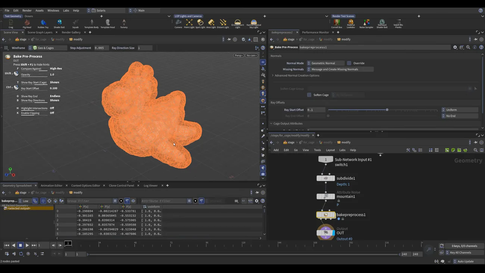

Karma でテクスチャをベイクする — 全パラメータ解説
出典: Houdini 22 | How to Bake Textures in Karma （SideFX 公式「Houdini 22 How-To」の1本 / Houdini 22 / 20:24 / 英語）。 このページは、上記の動画を見ながら自分用にまとめた日本語の学習メモです。SideFX 公式の翻訳ではありません。
何をする回か
Karma Texture Baker LOP の全パラメータ解説です。用途は3つあります。
- ハイポリのディテールを同形状のローポリに転写する
- 計算の重いシェーディング・ライティングをテクスチャに焼き込む
- 上記のための AOV を出す
14分がパラメータ解説、後半6分が新機能（ケージ）と適用という構成です。 パラメータを1つずつ潰していくので、後から参照する用途に向いた回だと思います。
1. 準備
- Solaris でライトと Rubber Toy（Flippy）を配置。ライトをずらして Intensity を上げ、ハイライトが出る状態にします
- ハイレゾ側を作ります。名前を
flippy_highresに変え、まず non-instanceable にします - SOP Modify を追加して Unpack。中に入って
subdivideで分割数を稼ぎます - このままだとベイクしても同じ絵になるので
mountainでノイズを足します（控えめに） - 元の Rubber Toy がローレゾ側（
flippy_lowres）になります
H22 では mountain は Attribute Noise のプリセットで、P に効いています。
置いた直後の警告とエラー
| 状態 | 原因 |
|---|---|
| Karma Texture Baker を置くと2ノードが置かれる | 本体＋USD Render ROP |
| 警告が出る | high-res / low-res メッシュを要求しています。両方のスロットに繋げば消えます |
| まだエラーが残る | どちらかが instanceable のままです。チェックを外します |
2. Baking Mode の使い分け
| モード | いつ使うか |
|---|---|
| Trace | ローレゾからレイを飛ばしてハイレゾに当て、当たった位置の情報をローレゾに投影します。 2つのメッシュがほぼ重なっているときの基本モードです |
| UV Match | 2つのメッシュが重なっていないとき。レイでは情報が取れないので、 UV 座標を使って情報を渡します。両方に UV セットが必要です |
| Single Mesh | メッシュ1つだけ。そのメッシュ自身に計算の重いシェーディングを焼き込む用途です |
UV Match が必要な理由を、2枚のグリッドで実演しています。
ハイレゾ側に mountain（height 1.5 前後）で山谷を作り、transform でずらします。
この状態で Trace を使うと、まったく情報が取れない領域と 情報が歪む領域が出ます。ここが UV Match の出番です。
3. 出力の設定
| パラメータ | 内容 |
|---|---|
| Dicing Camera | dicing はレンダー時にジオメトリを細分化して解像度を稼ぐ処理で、ベイク時は常に実行されます。 カスタムカメラを指定しなければ内部カメラが自動生成されます |
| Output Picture | マップの出力先と名前。hip を保存しておくと render フォルダが自動で作られます。
名前は baker_test + _ + UDIM 番号（既定 1001 ＝業界標準）+ 拡張子 |
| Resolution / UV Attribute Name / Default UDIM | それぞれ設定します |
| Name Separator | UDIM 番号の直後、マップ名の前に入る区切り。既定はアンダースコア。
AO を焼くと BAKERTEST_1001_OC のようになります |
いちばんの罠
実際の画像フォーマットは Images タブで決まります。
ファイル名が .exr でも、ここが PNG なら PNG で書き出されます。
EXR にしたければ open.exr を選びます。
拡張子を見て安心してしまうところなので、覚えておくと事故が減ると思います。
H22 の新機能として MIP マップテクスチャとしても保存できます。
デノイザ
Intel OIDN と NVIDIA OptiX が組み込みで、選ぶとどのマップに適用するか指定できます。
ここで大事な仕様があります。Karma Texture Baker LOP は Karma CPU 専用ですが、 ambient occlusion や curvature など一部の AOV 生成には GPU を使います。
4. 焼くマップを選ぶ
Images タブの中に texture maps / shader values / lighting があり、 焼けるマップが全部並んでいます。チェックを入れたものが焼かれます。
| タブ | 内容 |
|---|---|
| texture maps | ambient occlusion など。展開すると名前とサンプル数が見えます |
| Alpha は既定でチェック済みです | |
| shader values | base color など、よく使うものが揃っています |
| lighting | lighting を有効にしてから、beauty / direct diffuse を選べます。 LPE ライトのような追加 AOV を作るならここです |
サンプル数はテクスチャの品質を上げますが計算コストが増えます。 講師は問題を切り分けるとき以外は既定のままにしているそうです。
5. Bias と Distance — レイの飛ばし方
| パラメータ | 意味 |
|---|---|
| Bias | メッシュからどれだけ離れた位置でレイが発射されるか |
| Distance | レイがどこまで進むことを許されるか |
どちらにも3つのモードがあります。
| モード | 内容 |
|---|---|
| Global | メッシュの全点がまったく同じ値を使います |
| Attribute | アトリビュートで点ごとに値を決めます。 メッシュが近すぎる問題箇所などを個別に制御できます |
| Texture | テクスチャを塗って、どの領域を手厚く扱うかを決めます |
Trace Skew Texture
レイをピクセル単位で補正するマップで、ハイレゾのディテールを保つのに使います。
使い方が分かりやすいです。焼いてみて一部の領域だけ結果がおかしいとき、 グレースケール画像を作って正しく出た領域は黒、手当てが必要な領域は灰色〜白にします。 白いところだけレイが遠くまで飛びます。
この skew テクスチャは、H22 の新しい 3D Paint COP を使ってメッシュに直接塗れます。
6. その他のパラメータ
| 項目 | 内容 |
|---|---|
| 法線が無いとき | エラーにする / 警告にする / 黙って作るを選べます |
| Dicing Quality | ディスプレイスメントや細分化サーフェスを焼くときの LOD を制御します。上げると時間がかかります |
| Displacement Style | ディスプレイスメントマップがジオメトリを反転させることがあります。 true displacement のメニューからディスプレイスメントをバンプとして扱うか、 ディスプレイスメントシェーダを無効にすると回避できます |
| Trace Sets タブ | ジオメトリサブセットのように3つのセットを作れます。 複雑なものを分けて個別に制御できます |
7. H22 の新機能 — ケージ
Use Cage はTrace モードでのみ使えます （UV Match や Single Mesh では出てきません）。 メッシュ全体を囲むケージを使うことで、品質の制御が細かくできます。
| モード | 内容 |
|---|---|
| Topology Match | トポロジに沿ってケージを合わせます。ケージメッシュが必要 |
| UV Match | UV セットを使います。ケージメッシュが必要 |
| Cage Offset | これだけケージメッシュが不要です。自動で作ってくれます |
自分でケージを作る
- ハイレゾ側の2ノードをコピー＆ペーストして、Karma Texture Baker の前に置きます
Lでレイアウトを整えます- 名前を
flippy_cageに、SOP Modify も cage 用に変えます - SOP Modify の中で Bake Pre-Process を挿します

Bake Pre-Process を挿すだけでケージ（オレンジ）が出ます。 ケージが物体からどれだけ離れるかは Ray Start Offset で調整します。 上げると分厚く、下げるとメッシュに密着します。
音声だと「bake free process」と聞こえますが、正しくは Bake Pre-Process です。
ケージの中を覗く小技
ビューポートで K を押すとクリッピング平面が出ます。
中ボタンを押しながら左右に動かすと断面が動くので、
ケージとメッシュの位置関係を目で確認できます。もう一度 K で戻ります。
あとは Karma Texture Baker の Cage Mesh のスロットに flippy_cage を指定すれば完了です。
8. 焼いたテクスチャを適用する
- もう1つ Rubber Toy を持ってきて、non-instanceable にします
- Material Library → Karma Material Builder を作ります
- image ノードを置いて、出力を base color に繋ぎ、焼いた色マップを選びます
- Assign Material ノードで割り当てます
ここで大事な点があります。Flippy には既にテクスチャがあるので、 Assign Material の Binding Strength を「stronger than descendants」に変えます。 そうしないと元のマテリアルに負けます。
この回のまとめ
- 用途は3つ。ハイポリ→ローポリの転写 / 重いシェーディングの焼き込み / AOV 出力
- エラーが消えないときはどちらかが instanceable のままです
- Baking Mode は Trace（ほぼ重なっている）/ UV Match（離れている）/ Single Mesh（1枚に焼く）
- 実際の画像フォーマットは Images タブで決まります。ファイル名の拡張子は関係ありません
- Karma Texture Baker は Karma CPU 専用ですが、AO や curvature の生成には GPU を使います
- Bias はレイの発射位置、Distance は到達距離。どちらも Global / Attribute / Texture の3モード
- Trace Skew Texture は「黒＝そのまま、白＝もっと遠くへ」のマップです。3D Paint COP でメッシュに直接塗れます
- ディスプレイスメントでジオメトリが反転するときは、バンプとして扱うかシェーダを無効にします
- Use Cage は Trace モード限定。Cage Offset だけケージメッシュが不要です
- ケージは SOP Modify の中に Bake Pre-Process を挿すだけで作れます。距離は Ray Start Offset
- ビューポートで
Kを押すとクリッピング平面でケージの内側を確認できます - 適用時は Assign Material の Binding Strength を stronger than descendants にします